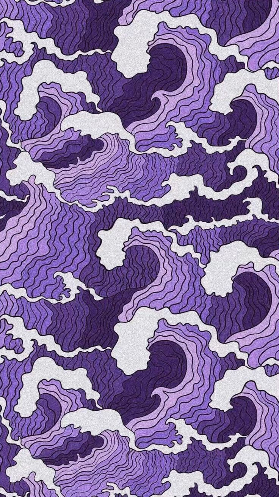
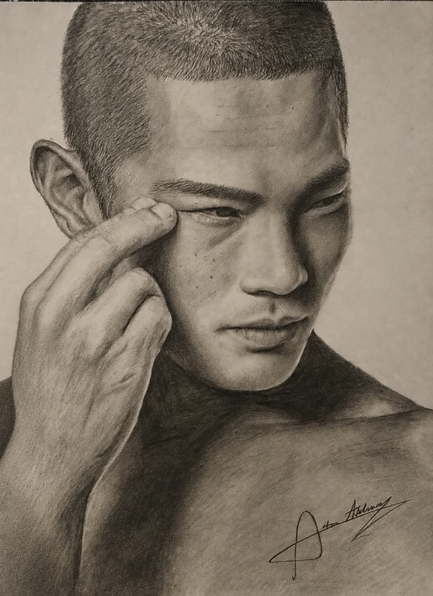
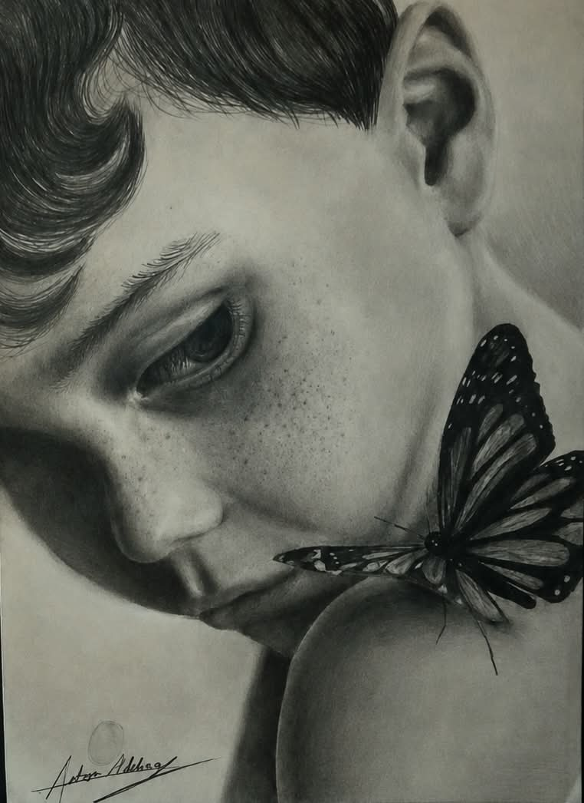

<!DOCTYPE html>
<html lang="en"></html>
<html>
<head>
<title>Paint&Go</title>
<meta charset="utf-8">
<meta name="viewport" content="width=device-width, initial-scale=1">
<meta name="description" content="Picturi personalizate">
<meta name="keywords" content="pensule, culori,personalizat, picturi, tablouri, fotografie">
<meta name="author" content="Anton Elena Adelina">
<meta http-equiv="refresh" content="30">
<link href="css1/style1.css" rel="stylesheet">
<script src="web1.js"></script>
<link rel="stylesheet" href="https://cdnjs.cloudflare.com/ajax/libs/font-awesome/6.5.2/css/all.min.css">
</head>
<body bgcolor="white">
  <body>

    <div class="header">
      <h1>Paint&Go</h1>
      <p>Tablouri personalizate</p>
    </div>
    
    <div class="navbar">
      <a href="index1.html" class="active">Home</a>
      <a href="galeriedesene.html">Galerie</a>
    
      
    </div>
    
    <div class="row">
      <div class="side">
        
        
        <p>Transformă-ți amintirile în artă unică! 🎨✨ Alege tablouri personalizate care spun povestea ta, create cu dragoste și atenție la detalii.</p>
       
      </div>
      <div class="main">
        <h2>GÂNDIRE</h2>
        <h5>Gândire, 17 august 2026</h5>
        
         <p>Un portret realizat în creion, în care am încercat să surprind nu doar trăsăturile chipului, ci și naturalețea și caracterul acestuia. Mi-a plăcut să lucrez la detalii și să construiesc treptat, prin umbre și lumini, un chip cât mai apropiat de realitate.</p>
      <br>
        
       

        </p>

        <h2>INOCENȚĂ</h2>
        <h5>Inocență, 25 iunie 2026</h5>
        
         <p>Un moment de curiozitate și inocență, surprins în creion, în care privirea unui copil se întâlnește cu delicatețea unui fluture.

       
       
        
        
      </div>
    </div>
    
    
    <div class="footer">
      <h4>Ești gata să îți transformi pereții într-o explozie de creativitate? La Paint&Go , fac tablouri personalizate care reflectă exact cine ești tu și ce iubești.<br/>

        De ce să mă alegi?
        100% unic: Creează un tablou care să spună povestea ta. De la selfie-uri epice la momentele preferate din viața ta.<br/>
      

        Fă-ți amintirile nemuritoare cu arta care vorbește despre tine.<br/>
        
    
        Alege dimensiunea, stilul și tema care te definesc și lasă-mă să-ți aduc viziunea la viață. Hai să ne conectăm pentru o consultație gratuită sau explorează galeria mea pentru a te inspira.</h4>
        <a href="mailto:paint.and.go3@gmail.com">paint.and.go3@gmail.com</a><br/>
      </div>
    
    </body>
    </html>
    